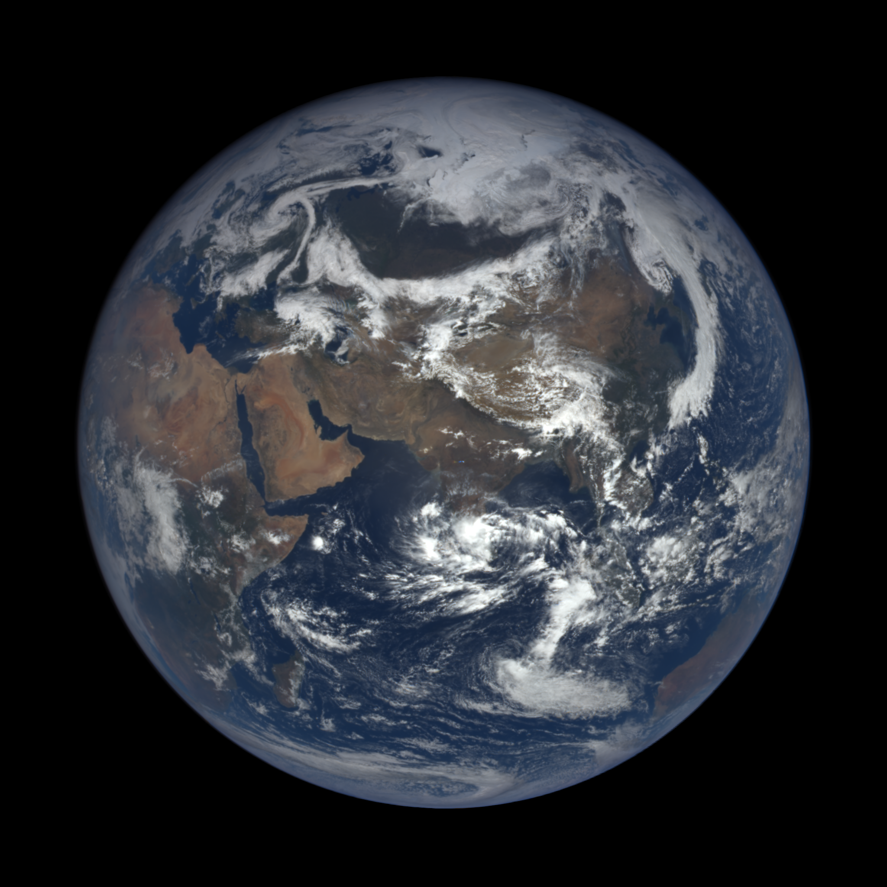

Project Introduction
Now, we're going to sink our teeth into something a little more difficult. Let's try to make use of the detailed information that this API returns for each image, and make a program that, given a set of user-supplied coordinates, finds a photo in the EPIC archives that closely matches those coordinates. This is a deceptively complicated application; as we're limited to 1,000 API requests per hour, we can't simply iterate through every image taken by the EPIC instrument. We'd have to make a separate call for each date on which imagery exists - causing us to run out of our request allotment very quickly. To limit the number of API requests that this program requires per use, we'll have to apply a bit of trigonometry, along with some applied astronomical knowledge. It's going to be fun.
But First, Some Math
Remember that the DISCOVR spacecraft orbits around the Sun, not the Earth. That noted, its orbit is calibrated such that it is always located directly in-line with the centers of the Earth and Sun. So, each image taken approximates the Sun's "view" of Earth at the particular moment in which the image was taken.
Over the course of a year, as the Earth orbits the Sun, the Earth latitude closest to the Sun oscillates between roughly -23.44 degrees and 23.44 degrees. This behavior is due to the Earth's axial tilt, and is the reason that we have seasons. Here's Bill Nye to explain:
Given the nature of DISCOVR's orbit between the Earth and the Sun, we can infer that the centroid coordinates of the images that it takes closely match the point on the Earth's surface that the Sun is closest to at the moment that the image is captured. We know that the latitude of this point varies over the course of a year in a predictable way. So, we have a way to estimate the range of coordinates in a set of images given the time of year in which they were taken.
The angle of the Sun's rays relative to the Equator is called its declination (read more about it here). If the Sun's declination is at 12 degrees, for instance, then its rays meet the Earth's surface at a right angle along 12 degrees latitude. Correspondingly, this means that the Sun is closest to the Earth along that latitude - the rays meeting the Earth's surface at a right angle have traveled the least distance. The solar declination on a given day can be estimated by:
Where N is the day of the year (starting at 0), and d is the declination angle relative to the equator. We can solve for N, which gives us the following formula:
Phew. Now we have a way to tell the latitude closest to the Sun - and, correspondingly, the latitude at which the EPIC instrument is focused - for a given day of the year.
How does this simplify our program? Well, it allows us to narrow down a potential range of dates for a user-supplied latitude and longitude. If we know that the EPIC instrument is focused on the southern hemisphere between the autumn and spring equinoxes, for instance, we can ignore those dates in a search of the northern hemisphere. In this way, we significantly reduce the number of API calls that we need to make, resulting in a more functional, hardy web application.
Better yet, given our formula above, we can estimate the day on which the Sun is closest the supplied latitude, which cuts down the number of requests even more. We can simply grab a small set of image data from the API for dates around the calculated day, allowing for variations in latitude or margin of error in our calculations.
A final note, however: given that the EPIC satellite orbits the Sun in this way, we're limited to images taken between 23.45 and -23.45 degrees of latitude. This means that we won't find an image taken directly above Corvallis (at 44.56 degrees), for instance. We will, however, find the closest match that exists.
Getting Our Bearings
Now that we have the theory out of the way, let's get to work making an application that puts it to use.
When you're working with a Javascript program that will make AJAX calls, it's always a good idea to take the time to plan your approach. Think about what needs to happen, and when it needs to happen. In this case, our program must first get a list of available dates with imagery, then filter those dates into a smaller set of candidates for image matches. Finally, it needs to evaluate that subset of images to find the image with centroid coordinates closest to the user's supplied coordinates.
Let's take another look at the API documentation. We see that we can call the "available" endpoint for a list of all dates with available imagery, given a certain image color (natural or enhanced). That knocks out our first step. Also observe that we can call the "date" endpoint to get a list of images taken on a certain date, also given the image color. This takes care of our second step.
With this in mind, we know that we'll need to make a series of API calls to get our program working: one to get a list of dates, followed by a series of calls corresponding to the number of "candidate" dates that we've filtered out from that list. It's going to be a little more complicated than a single GET request, but it's nothing that you can't handle. Let's get started.
User Input
A discussion of the particulars of HTML forms is beyond the scope of this document, but in order to get input from the user, we should create a "skeleton" HTML document that looks something like this:
<!DOCTYPE html>
<html>
<head>
<meta charset="UTF-8">
<title>NASA EPIC API - Find an Image</title>
<script src="./nasa_epic.js"></script>
</head>
<body>
<form id="search-form">
<fieldset>
<legend>Find an Image</legend>
<label>Latitude:
<input type="number" id="lat" value="0">
</label>
<label>Longitude:
<input type="number" id="lon" value="0">
</label>
<ul>
<li>
<label>
<input type="radio" name="img_type" id="natural" value="natural">Natural
</label>
</li>
<li>
<label>
<input type="radio" name="img_type" id="enhanced" value="enhanced" checked="true">Enhanced
</label>
</li>
<input type="submit" value="Search" id="submit-search">
</fieldset>
</form>
<div id="search-results"></div>
</body>
</html>
The styling is up to you. Our example below will reference some of these elements by id or value, so be sure that you're comfortable with basic DOM manipulation in Javascript before proceeding. Now, on with the show.
Breaking It Down
Let's work through this code together.
When our request / response sequence gets a little more complicated, it's handy to start decomposing specific parts of our program into defined functions. This helps limit the "callback hell" pattern of deeply-indented, inscrutable code.
So, let's do that. We'll start with some of the constants that we'll use throughout the program, along with a few helper functions:
var MAX_DEC = 23.45; // max declination
var MIN_DEC = -23.45; // min declination
var DAY_TO_ORBITAL_POS = 360/365;
var EARTH_RADIUS_KM = 6371; // radius of the earth, in km
var DATE_RANGE = 7; // range of days before/after target that we search
var YEAR = 2016; // year that we'll use to source our imagery
function declinationToDay(latitude, year) {
// calculate day number (from 0) where declination = latitude
var dayNum = toDeg(Math.acos( (latitude / MIN_DEC) )) / DAY_TO_ORBITAL_POS - 10;
var dateOf = new Date(year, 0);
dateOf.setDate(dayNum);
dateOf.setHours(0);
return dateOf;
}
function toDeg(rad) { return ((rad) * 360) / (2 * Math.PI); }
function toRad(deg) { return (deg * Math.PI / 180); }
function clearResults() {
document.getElementById("search-results").textContent = "";
}
function displayWaitMessage() {
var searchnote = document.createElement("h2");
searchnote.textContent = "Just A Moment...";
document.getElementById("search-results").appendChild(searchnote);
}
We set YEAR as a global constant to ensure that, program-wide, we source our imagery from the year 2016. This helps to simplify some of the date calculations in our program, and ensures that we're sourcing from a year with complete image data (as the DISCOVR craft was launched in 2015).
The declinationToDay function puts into Javascript the final formula described above- it allows us to enter a specific latitude between 23.45 and -23.45, and returns a Date object corresponding to the day on which the Sun's declination matched that latitude.
The toDeg and toRad functions simply return their argument converted to degrees or radians.
The clearResults and displayWaitMessage functions exist to avoid repetition in our code.
We now set up our first API call:
document.addEventListener("DOMContentLoaded", bindSubmit);
function bindSubmit() {
document.getElementById("submit-search").addEventListener("click", function(event) {
clearResults();
displayWaitMessage();
var dateReq = new XMLHttpRequest();
var rootUrl = "https://api.nasa.gov/EPIC/api/";
// make string for image type
var imgType;
if(document.getElementById("natural").checked) { imgType = "natural"; }
else if (document.getElementById("enhanced").checked) { imgType = "enhanced" }
var lat = document.getElementById("lat").value;
var lon = document.getElementById("lon").value;
// obtain available imagery dates
dateReq.open("GET", rootUrl + imgType + "/available?api_key=" + key, true);
This code segment starts with the familiar "DOMContentLoaded" event listener that calls a bindSubmit function when it triggers. Below that,bindSubmit adds a "click" event listener on our "Submit" button.
When the "click" event triggers, our program clears any existing results, gets data from its document's HTML form (via clearResults), and adds a "Just a Moment" note instructing the user that the search is in progress (via displayWaitMessage). This isn't absolutely necessary, but the search process can take a few seconds, so it's good practice to alert the user that something is actually happening when they click the "Submit" button.
Next, we open a "GET" request to the API's "available" endpoint, which will give us the list of dates with available imagery. This command accesses a different part of the API, but the ideas are identical to the example on the previous page - we build a URL matching the resource that we'd like to access, then pass that as an argument to the open method. Don't forget to add the true argument, which indicates that this is an asynchronous request.
On with the next section:
dateReq.addEventListener("load", function() {
if(dateReq.status >= 200 && dateReq.status < 400) {
var response = JSON.parse(dateReq.responseText);
response = filterUnique(response);
var targetDay;
// filter by solar declination angle (angle of sun above/below equator)
if (lat > MAX_DEC) {
targetDay = declinationToDay(MAX_DEC, YEAR); //select dates around summer solstice
}
else if (lat < MIN_DEC) {
targetDay = declinationToDay(MIN_DEC, YEAR); //select dates around winter solstice
}
else {
targetDay = declinationToDay(lat, YEAR); // calculate day at that declination
}
// filter dates such that only those one week prior and one week after target date are included
response = filterDates(response, targetDay);
// proceed to next step - get image data for each candidate date
getImageData(response, imgType, lat, lon);
}
else {
console.log("Error in request: " + dateReq.status);
}
});
Now we're getting into the meat of our program. As with our previous example, we parse the JSON data returned by our API call, which gives us an array of date strings in YYYY-MM-DD format. In my experience working with this API, there were occasionally instances of duplicate dates in the returned list, so we call the filterUnique function to filter out any of these duplicate values:
function filterUnique(dates) {
var filteredArray = [];
for(day in dates) {
if(filteredArray.indexOf(dates[day]) === -1) {
filteredArray.push(dates[day]);
}
}
return filteredArray;
}
Whether these duplicate values were the result of a server glitch or simply a "quirk" of the API is uncertain.
Returning to our "load" event listener, we need to find the date on which the DISCOVR spacecraft (and its EPIC instrument) is closest to the coordinates in question. Notice that any latitudes above 23.45 are "corrected" to the maximum possible latitude of 23.45. Recall our discussion above, where we note that the declination of the Sun never exceeds 23.45. If the target latitude is above this number, the best we can do is select dates around the summer solstice. The opposite is true for latitudes below -23.45: our best bet is to select dates around the winter solstice. For latitudes between -23.45 and 23.45, we can pass the entered latitude directly to our declinationToDay function.
At this point, we have a target date to search around, so we need to again filter our response array such that it only includes days within the range that we've specified as a constant: 7 days before and after the target day.
function filterDates(dates, targetDay, dateRange) {
var filteredArray = [];
var min = new Date(targetDay);
min.setDate( min.getDate() - dateRange );
var max = new Date(targetDay);
max.setDate( max.getDate() + dateRange );
for(day in dates) {
var dayArray = dates[day].split("-"); // returns array with [year, month, day]
// Months are zero-indexed
var candidate = new Date(dayArray[0], dayArray[1] - 1, dayArray[2]);
console.log("day1a: " + dates[day] + " day1b: " + candidate.toString());
if( (candidate.getTime() >= min.getTime())
&& candidate.getTime() <= max.getTime()) {
filteredArray.push(dates[day]);
}
}
return filteredArray;
}
We have to get a little fancy with Date objects to keep this function brief. We create Date objects corresponding to dateRange days before and dateRange days after our target date. Then for each day in the dates array, we create a new Date object corresponding to that day. We employ a similar process to that shown on the previous page: splitting the string at dates[day] into an array containing values corresponding to year, month, and day.
Now, we compare this Date object to the min and max Date objects. If candidate is within this range, the corresponding day in the dates array is pushed to our filtered array. filteredArray is returned after we've iterated through each element in dates.
It's important to note that we may end up sourcing data from the years 2015 and 2017 if our targetDay is very early or very late in a calendar year. This is not an issue as there is reliable, consistent image data in both December 2015 and January 2017 - hence, our reason for choosing 2016. If you see these years when debugging, however, know that you haven't gone crazy.
After filtering our dates down to the range that we've specified, we call a function called getImageData to, as you might guess, obtain image data for the dates that we've specified. First, however, let's finish our "click" event listener and its enclosing bindSubmit function by sending dateReq and calling preventDefault to stop the "Submit" button from reloading our page.
dateReq.send();
event.preventDefault();
}); // close click event listener
} // close bindSubmit
Processing Image Data
We now move to the portion of the program in which we process image data for each of the dates in our filtered array. To accomplish this, we call getImageData, which is written like so:
function getImageData(dates, imgType, lat, lon) {
var imageData = [];
var completed = 0;
var rootUrl = "https://api.nasa.gov/EPIC/api/";
for(var i = 0; i < dates.length; i++) {
(function (i) { // create different closure for each date
var imgReq = new XMLHttpRequest();
imgReq.open("GET", rootUrl + imgType + "/date/"
+ dates[i] + "?api_key=" + key, true);
imgReq.addEventListener("load", function() {
if(imgReq.status >= 200 && imgReq.status < 400) {
var response = JSON.parse(imgReq.responseText);
// "flatten" response into 1-D array
for(var j = 0; j < response.length; j++) {
imageData.push(response[j]);
}
}
else {
console.log("Error fetching data for " + dates[i].date
+ ": " + imgReq.statusText);
}
completed++;
// callback once we're finished
if(completed == dates.length) {
if(imageData.length > 0) {
findClosest(imageData, imgType, lat, lon);
}
else { // no images to display.
clearResults();
}
}
});
imgReq.send(null);
event.preventDefault();
})(i);
}
}
Again, lots of different things happening here, but we'll walk through it together.
First, it's important to note that we're requesting values from another set of endpoints in the EPIC API - image data associated to a particular date. The syntax for this is very similar to the GET requests you've seen in the past. The API responds to these requests very similarly to a request for the most recent image data - with an array of objects, each having properties describing a particular image.
To obtain image data for each date in the dates array, we need loop through each element in that array, making a GET request for the image data corresponding to the date string contained in that element. To accomplish this, we'll need to wrap our GET request in an immediately-called function, creating a separate closure for each iteration of the loop. If we didn't have this function, the function called when imgReq's "load" event handler fires would likely always reference a value of i equal to dates.length. Why is this? Well, recall that in Javascript a variable can be envisioned as a "tentacle" reaching out to a specific value. When we reassign imgReq on each iteration through the loop, we update which value the "tentacle" reaches. Recall, too, that our program is event-driven - this means that the "load" event will likely trigger once our program has moved out of this loop and into subsequent commands. So, assuming that this is the case, we see that when, eventually, an imgReq object's "load" event triggers, there is a mismatch between the object associated with that trigger and the imgReq object referenced inside of the triggered function. So, essentially, the correct imgReq object has been overwritten. Oof.
Fortunately, by creating a closure we "freeze" the value of imgReq every time the enclosing function is called. We can then ensure that it isn't overwritten by subsequent iterations through our for loop.
Moving on: once each GET request completes, we add the content of the response to our imageData array. Recall that the response is itself wrapped in an array - to avoid over-complicating the processing that we'll undertake later, we push each object in the response into imageData separately, which allows imageData to remain as a 1-D array rather than an array of arrays.
Finally, note the completed variable. Because we're making requests asynchronously, we need to track how many requests have completed so that we know when to start processing our image data. By declaring a variable outside of the for loop's scope, we ensure that each of the callback functions attached to imgReq objects has access to the same completedvariable. After each successful "load" event (successful or not), the value of completed is incremented. Once its value equals the length of the list of dates, the function knows to call findClosest - assuming that at least one of the requests was successful.
Phew. We're finally finished with our API calls. On to that findClosest function...
function findClosest(imageData, imgType, targetLat, targetLon) {
var closest = imageData[0];
var coords = imageData[0].centroid_coordinates;
var closestDistance = haversineDistance(targetLat, targetLon, coords.lat, coords.lon);
for(var image = 1; image < imageData.length; image++) {
coords = imageData[image].centroid_coordinates;
var testDistance = haversineDistance(targetLat, targetLon, coords.lat, coords.lon);
if(testDistance < closestDistance) {
closest = imageData[image];
closestDistance = testDistance;
}
}
displayImage(closest, imgType);
}
This function just performs a linear search for the image with centroid coordinates closest to our target latitude and longitude. To do so, we need to calculate the distance between those coordinates and the centroid coordinates in each image.
Note that, to do so, we call the haversineDistance function. Let's go ahead and introduce it to you:
function haversineDistance(targetLat, targetLon, testLat, testLon) {
var lat1 = toRad(targetLat);
var lat2 = toRad(testLat);
delta_lat = toRad(targetLat - testLat);
delta_lon = toRad(targetLon - testLon);
var lon1 = toRad(targetLon);
var lon2 = toRad(testLon);
var hav_lat = Math.sin(delta_lat / 2) * Math.sin(delta_lat / 2);
var hav_lon = Math.sin(delta_lon / 2) * Math.sin(delta_lon / 2);
var a = hav_lat + Math.cos(lat1) * Math.cos(lat2) * hav_lon;
return 2 * EARTH_RADIUS_KM * Math.asin( Math.sqrt(a) );
}
haversineDistance uses the Haversine Formula to calculate the "great circle" - or, straight-line - distance between two coordinates on the Earth's surface. You can read about in detail here.
Returning to our findClosest function, we note that, once the image with centroid coordinates closest to our target has been identified, our function calls the displayImage function.
Here's displayImage:
function displayImage(imageData, imgType) {
clearResults();
var results = document.getElementById("search-results");
var imgLocation = imageData.image;
var imgRoot = "https://epic.gsfc.nasa.gov/archive/";
// parse to find year, month, day
var date = imageData.date;
date = date.slice(0, date.indexOf(" ")).split("-");
var img = document.createElement("img");
img.setAttribute("src", imgRoot + imgType + "/" + date[0] + "/" + date[1] + "/" + date[2] +
"/png/" + imgLocation + ".png");
var resultsHeader = document.createElement("h2");
resultsHeader.textContent = "Your Result:";
results.appendChild(resultsHeader);
results.appendChild(img);
}
This should look familiar to you. Note that, in this case, we're accessing the "alternate" image source URLs at epic.gsfc.nasa.gov/archive/, as these don't require API keys. We're going to display the image on our site, so we don't want its src attribute to display our API key to anyone browsing through the DOM.
The rest of this is straightforward - we get our image's URL, create an img element at set its src attribute to that URL, add some basic styling, and voila! A image of earth, centered near the coordinates of your choosing.
Testing it Out
Now, put all of this together and try to find some interesting results.
Hmm...how about Corvallis, OR (44.5646°, -123.2620°)?
That's what we expected! An image taken near latitude 24.45, at a longitude near that of Corvallis. How about something closer to the Equator - Mumbai, India, perhaps (19.0760°, 72.8777°)?
Yep, that's Mumbai. Now, what about Alice Springs, Australia (-23.6980°, 133.8807°)?
Still spot-on. Finally, let's try Charlottesville, VA (38.0293°, -78.4767°):
That's it! Everything appears to be working as expected. Click the button below for a live example of this program, with some added styling in CSS and a few other enhancements:
What's Next?
You've used NASA's EPIC API to make something kind of interesting. Nice work! Armed with the knowledge that you've gleaned from this little tutorial, you'll be able to handle almost any API that NASA has to offer. Good luck!